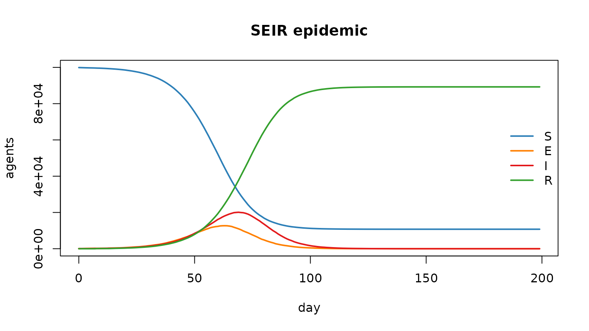
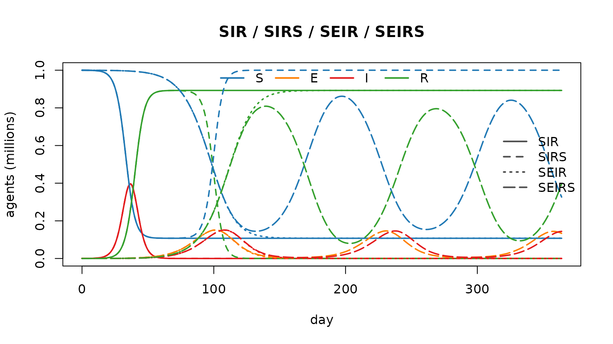
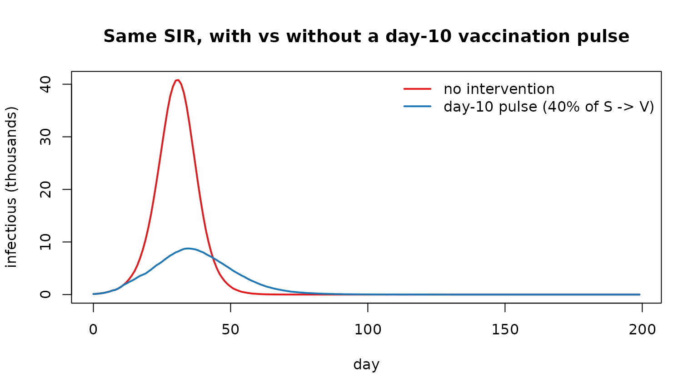

Razer — getting started (R Notebook)
Source:vignettes/articles/getting_started.Rmd
getting_started.RmdThis is an R Notebook — R’s equivalent of a Jupyter
notebook. In RStudio, click Run on a chunk (or press
Ctrl/Cmd+Shift+Enter) and the output — including plots —
appears inline beneath it; Preview renders the whole thing to
HTML. The .R scripts in examples/ are the same
models as standalone scripts; this notebook shows the interactive
workflow.
library(razer)
states <- laser_states() # c(S = 0, E = 1, I = 2, R = 3, M = 4, D = -1)1. Run a model
run_model() builds an agent population from a per-node
scenario, advances one of the SI / SEI / SIS / SEIS / SIR /
SEIR / SIRS / SEIRS models, and returns a model
environment with the per-node census Columns. Here: a single
well-mixed SEIR epidemic.
scenario <- data.frame(population = 1e5L, I = 100L)
m <- run_model(scenario, "SEIR", nticks = 200L, beta = 2.5 / 8, # R0 = beta * 8 = 2.5
infectious_period = 8, incubation_period = 5, seed = 1L)
# $values() copies a census Column back as an (nticks x n_nodes) matrix; [, 1] is the node.
traj <- cbind(S = m$nodes$S$values()[, 1], E = m$nodes$E$values()[, 1],
I = m$nodes$I$values()[, 1], R = m$nodes$R$values()[, 1])
matplot(0:199, traj, type = "l", lty = 1, lwd = 2,
col = c("#2c7fb8", "#ff7f00", "#e31a1c", "#33a02c"),
xlab = "day", ylab = "agents", main = "SEIR epidemic")
legend("right", c("S", "E", "I", "R"), col = c("#2c7fb8", "#ff7f00", "#e31a1c", "#33a02c"),
lwd = 2, bty = "n")
2. Compare state structures
Run four models on the same population and parameters;
colour by state, line type by model (this is examples/compare_models.R,
condensed).
N <- 1e6L; nticks <- 365L; D <- dist_gamma(140, 0.05) # mean 7-day periods
runs <- lapply(c("SIR", "SIRS", "SEIR", "SEIRS"), function(mod) {
args <- list(scenario = data.frame(population = N, I = 100L), model = mod,
nticks = nticks, beta = 2.5 / 7, infectious_period = D, seed = 1L)
if (grepl("E", mod)) args$incubation_period <- D
if (mod %in% c("SIRS", "SEIRS")) args$immunity_period <- 60
do.call(run_model, args)
})
names(runs) <- c("SIR", "SIRS", "SEIR", "SEIRS")
col_comp <- c(S = "#1f78b4", E = "#ff7f00", I = "#e31a1c", R = "#33a02c")
lty_model <- c(SIR = 1, SIRS = 2, SEIR = 3, SEIRS = 5)
plot(NA, xlim = c(0, nticks - 1), ylim = c(0, 1), xlab = "day", ylab = "agents (millions)",
main = "SIR / SIRS / SEIR / SEIRS")
for (mod in names(runs)) for (cmp in c("S", "E", "I", "R")) {
col <- runs[[mod]]$nodes[[cmp]]
if (!is.null(col)) lines(0:(nticks - 1), rowSums(col$values()) / 1e6,
col = col_comp[cmp], lty = lty_model[mod], lwd = 1.8)
}
legend("top", names(col_comp), col = col_comp, lwd = 2, lty = 1, horiz = TRUE, bty = "n")
legend("right", names(lty_model), col = "grey30", lwd = 2, lty = lty_model, bty = "n")
3. Add an intervention with a callback
run_model() takes init /
step_enter / step_update /
step_exit callbacks and an extra_states
argument for user-defined states. Here a one-off vaccination moves 40%
of the still-susceptible population to a new "V" state on
day 10 — early, before the wave takes off — so it has something
to prevent (see examples/sia_campaigns.R
and examples/quarantine.R
for scheduled / leaky versions). We compare the same SIR model
with and without that pulse, so the difference is the intervention
alone.
sir_args <- list(scenario, "SIR", nticks = 200L, beta = 2.5 / 8, infectious_period = 8, seed = 1L)
base <- do.call(run_model, sir_args) # no intervention
vacc <- do.call(run_model, c(sir_args, list(extra_states = "V",
step_exit = function(model) {
if (model$tick != 10L) return(invisible())
V <- model$states[["V"]]; S <- model$states[["S"]]
s <- model$people$state$values()
take <- which(s == S); take <- take[runif(length(take)) < 0.4]
s[take] <- V; model$people$state$set(s)
move_count(model$nodes$S, model$nodes$V, length(take), model$tick)
})))
matplot(0:199, cbind(`no intervention` = rowSums(base$nodes$I$values()),
vaccinated = rowSums(vacc$nodes$I$values())) / 1e3,
type = "l", lty = 1, lwd = 2, col = c("#e31a1c", "#1f78b4"),
xlab = "day", ylab = "infectious (thousands)",
main = "Same SIR, with vs without a day-10 vaccination pulse")
legend("topright", c("no intervention", "day-10 pulse (40% of S -> V)"),
col = c("#e31a1c", "#1f78b4"), lwd = 2, bty = "n")
Where to next
The examples/ directory has runnable .R
scripts for every model and intervention (spatial SIR, endemic dynamics,
measles with vital dynamics + maternal immunity, SIA campaigns
with/without waning, quarantine, a 100-year squash run, …). Each prints
a summary and, when sourced in RStudio, draws its plots in the
Plots pane; run via Rscript it writes the
same figures to examples/output/.